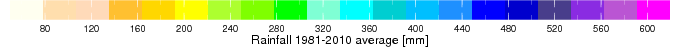

DGM/ DRDH/SATP

Le climat de Madagascar
RR

Tmin

Tmax

Tmoy

Description du climat et du temps en mois de Mars
Le mois de Mars est le mois de la fin du cœur de saison chaude et humide.
Les précipitations diminue considérablement par rapport au mois de Février sauf pour la partie Est de l’île.
Le nombre de jours de pluies en moyenne pour le mois de Mars varie du Nord-Est en Sud-Ouest : 16 à 22 jours pour la partie Nord et Est, 8 à 14 jours pour les plateaux centraux et Nord-Ouest et inférieur à 6 jours pour les régions au Sud et Sud-Ouest de l’île.